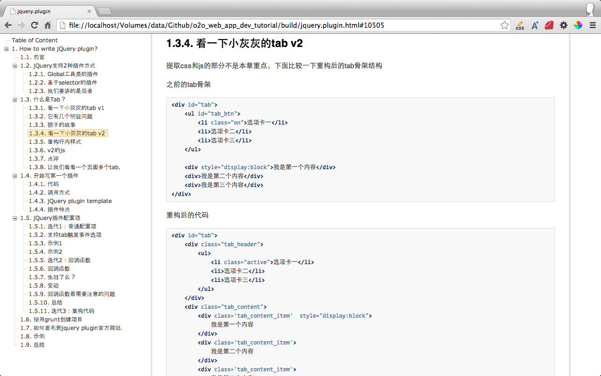
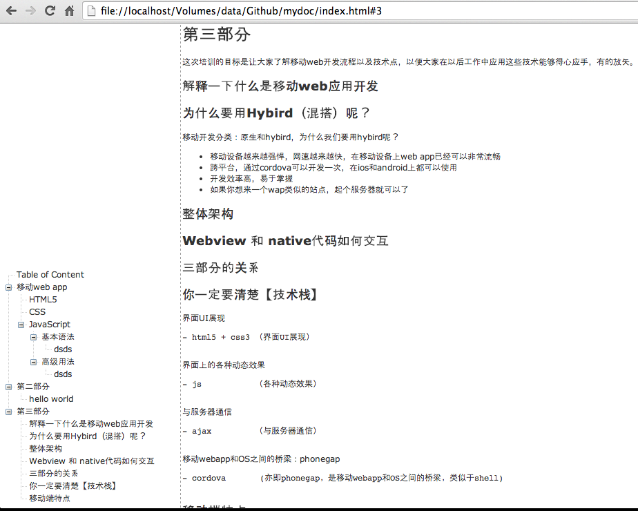

jQuery.zTree_Toc.js
this is a jQuery plugin for preview markdown table of content





Usage
Add this line to your html file:
<script type="text/javascript" src="js/jquery-1.4.4.min.js"></script>
<script type="text/javascript" src="js/jquery.ztree.core-3.5.js"></script>
<script type="text/javascript" src="jquery.ztree_toc.js"></script>
Add this line to your html file:
<link rel="stylesheet" href="../css/zTreeStyle/zTreeStyle.css" type="text/css">
And then execute:
<SCRIPT type="text/javascript" >
<!--
$(document).ready(function(){
$('#tree').ztree_toc({
});
});
//-->
</SCRIPT>
例子
@see demo/*.html
for example:
$(document).ready(function(){
$('#tree').ztree_toc({
is_auto_number: true,
// documment_selector: '.first_part'
});
});
Contributing
- Fork it
- Create your feature branch (
git checkout -b my-new-feature) - Commit your changes (
git commit -am 'Add some feature') - Push to the branch (
git push origin my-new-feature) - Create new Pull Request
or @see at CONTRIBUTING.md
版本历史
- v0.1.0 初始化版本
- v0.2.0 支持正文滚动，同时更新ztree
@see at History.md
Checklist
- Completely customizable documment selector: 'body' 自定义header文档位置，此处为jq的选择器（已完成）
- is_auto_number: false, 默认是否显示header编号（已完成）
- is_expand_all: true,默认是否展开全部（已完成）
- is_highlight_selected_line是否对选中行，显示高亮效果（TODO）
- Click to smooth scroll to that spot on the page（TODO）
- Automatically highlight the current section（TODO）
- Extremely lightweight (2,963|1,514 bytes gzipped)（已完成）
- Can have multiple on a page（TODO）
- 正文移动，更新目录（已完成）
- 滚动动画（TODO）
- right click to config（TODO）
License
this gem is released under the MIT License.